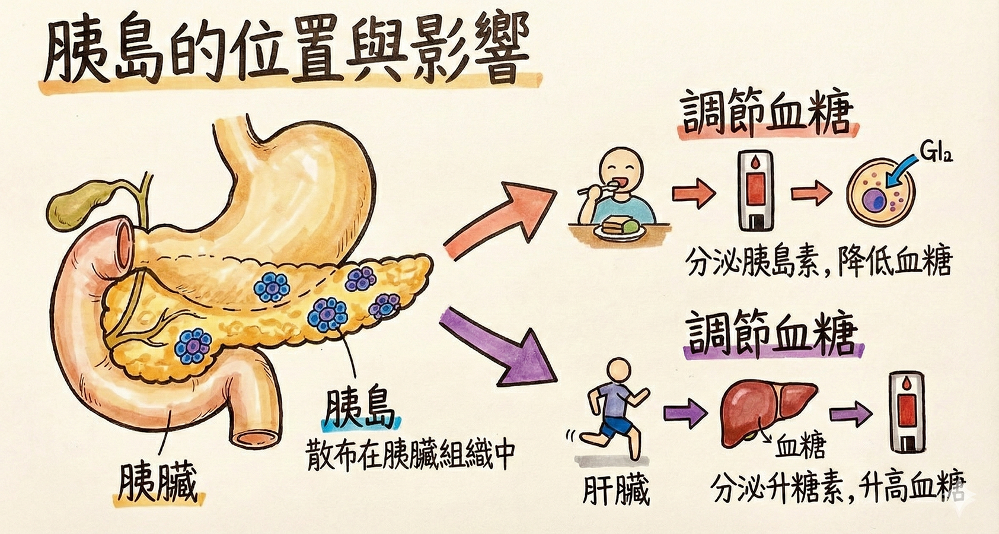
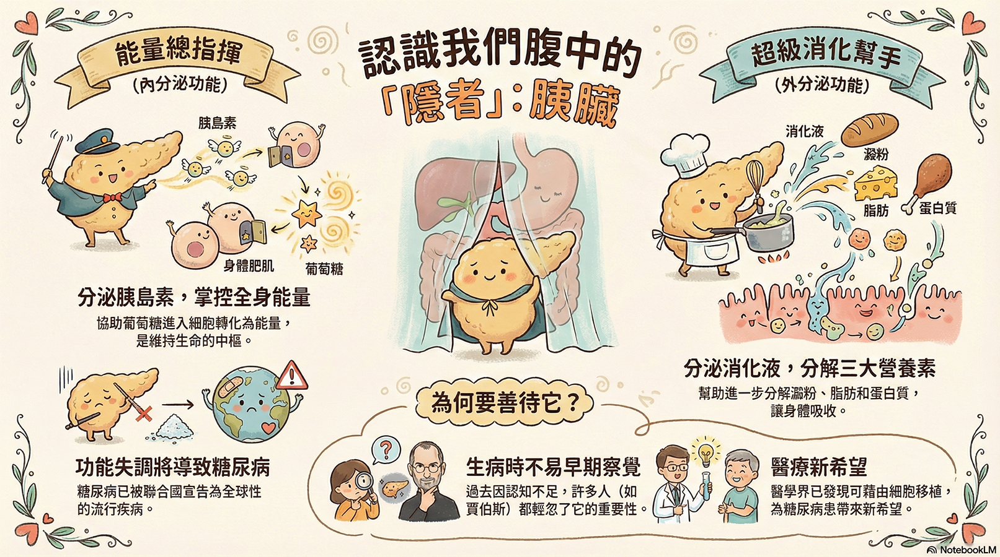

請根據觀看的影片回答以下問題（請逐題作答並檢查）：
1. 根據影片，胰臟除了是內分泌器官（分泌胰島素等），它同時也是哪一種系統的器官，負責分泌消化液？
2. 人體細胞需要哪種物質作為「燃料」來產生能量，而這物質需要胰島素的協助才能進入細胞？
3. (進階題) 影片中將「細胞」比喻為房子，將「胰島素」比喻為門把的鑰匙。若以此比喻來推論糖尿病的成因，下列哪種情況不屬於糖尿病的致病原因？
4. 為什麼糖尿病患者（長期高血糖）容易出現手腳冰冷、傷口不易癒合，甚至影響視力等問題？
恭喜完成所有影片挑戰！這是補充圖解：

請綜合所學，完成下列挑戰：
Q1. 生活情境： 小明剛吃完一頓豐盛的自助餐吃到飽。請問此時他體內的激素變化，下列哪張圖表的描述最合理？
Q2. 功能配對： 請幫下列生理需求找到正確的「管家」（激素）。
(1) 飢餓太久需要分解肝糖到血液中：
(2) 讓血液中的葡萄糖進入肌肉細胞儲存：
Q3. 病理推論： 醫生發現一位病患的「胰管」被膽結石堵住了，導致胰液無法排入小腸，出現消化不良的症狀。但抽血檢查後發現，他的「血糖數值」依然能維持正常穩定。請問這個現象最能說明胰臟的哪項特性？
Q4. 症狀分析： 如果一個人的胰島素長期「分泌不足」或「細胞對其反應不佳」，身體可能會出現哪些狀況？(請勾選所有正確選項)